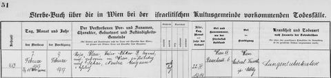
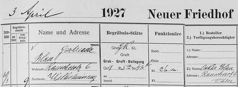

Anna Maria Schepan
1892–1964
Life events
| Religion | 1892 · Catholic |
|---|---|
| Born | 29 May 1892 · Vienna, Austria Map  |
| Baptized | 5 Jun 1892 · Vienna, Austria Map · Wienerdberg |
| Married | 19 Apr 1914 · Oskar Blau · Stadttempel, 1010, Seitenstettengasse 4, Vienna, Austria Map  |
| Lived | |
| Lived | |
| Lived | 1935 · 1200 Rauscherstrasse 6, Apt. 23, Vienna, Austria Map  |
| Lived | 1 Jan 1938 · 1200 Rauscherstrasse 6, Apt. 23, Vienna, Austria Map  |
| Nazi Persecution | 22 Jul 1938 · 1200 Rauscherstrasse 6, Apt. 23, Vienna, Austria Map · per Nazi records. Apartment #23 |
| Lived | 1940 · 1200 Treustrasse 26, Vienna, Austria Map · Occupation: Stickerin = Embroider  |
| Lived | 1942 · 1200 Treustrasse 26, Vienna, Austria Map · Occupation: Stickerin = Embroider. Per Lehman's phone book. |
| Lived | |
| Lived | 1949 · 1200 Treustrasse 26, Vienna, Austria Map · Occupation: Stickerin = Embroider. Per Lehman's phone book. |
| Lived | 1950 · 1200 Treustrasse 26, Vienna, Austria Map · Occupation: Stickerin = Embroider  |
| Lived | 1964 · 1090 Seegasse 9, Vienna, Austria Map |
| Died | 5 May 1964 |
| Buried | 11 May 1964 · Vienna, Austria Map · Gate 4, Group: 8 Row: 4 Grave: 22 |
Family
Anna Maria Schepan1892–1964
Oskar Blau1886–1931
Children

Rosa Blau1914–1917- Hermine 'Mina' Blau1916–1955

Gertrude Blau1925–1927 Ernst Blau1928–2017
Ernst Blau1928–2017 Erika Blaub. 1930
Erika Blaub. 1930
Photos
Anna Maria Schepan
Anna Maria Schepan
Oskar Blau
Anna Maria Schepan
Teresa Feldman
Josef Blau
Betti Borbola Fuchs
Samuel Blau
Ilonka 'Helen' Blau
+13 more

Anna Maria Schepan
Teresa Feldman
Josef Blau
Betti Borbola Fuchs
Samuel Blau
Richard Blau
+3 more
Anna Maria Schepan
Teresa Feldman
Josef Blau
Richard Blau
Anna Maria Schepan
Anna Maria Schepan
Ernst Blau
Hermine 'Mina' Blau
Erika Blau
Anna Maria Schepan
Teresa Feldman
Josef Blau
Richard Blau
Anna Maria Schepan
Teresa Feldman
Josef Blau
Richard Blau
Juliana Oszman
Anna Maria Schepan